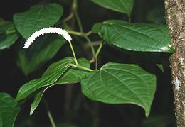

This pepper, related to the round black pepper, produces loose seed spikes embedded with many tiny peppercorns, each inside a fruit capsule. The plant is native to moist regions of Sub-Saharan Africa, from Sierra Leone on the Atlantic coast to the Ethiopian highlands in East Africa. It is found south as far as Angola, Tanzania and South Africa.
The seed heads of this pepper are used as a spice mostly in Ethiopia and
Eritrea, but the plant is gathered in the wild for medicinal use in other
parts of Africa. The seed heads are not interchangeable with
Indian Long Pepper as they are much
milder and sweeter. Their flavor and hotness is more similar to Cloves and
Cardamom than to black pepper. The photo specimens were up to 0.25 inch
diameter and 1.9 inches long (6.4 x 48 mm).
More on Pepper Family.
More on Spices.
 This photo is of a living Ethiopian Pepper Plant with blooming flower head, taken in South Africa. Leaves, bark, and root tubers are collected in the wild for various medicinal purposes. All parts of the plant are considered safe and medicinal. Photo by Franz Xaver distributed under license Creative Commons Attribution-Share Alike 4.0 International.